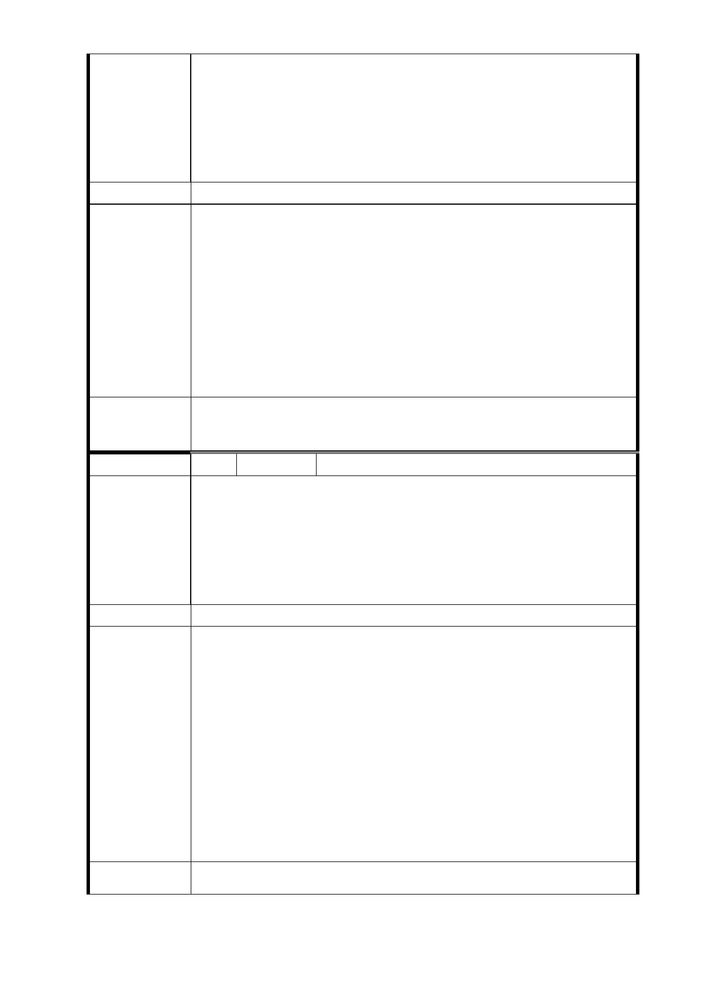

三、捷運乃百年建設，應留榮耀於子孫
世界各國之捷運系統，其營運歷史，逾百年者，比比皆
是；前人建樹，當彰顯參與建造者之功績與睿智，不可
徒留負債和雜亂，而貽笑後世。殷殷所盼，尚祈袞袞諸
公勉予雅納。
建議辦法
1.同編號 3 及 4-1 研析意見。
2.有關目前聯合開發之機制，俟都市計畫變更案之主要計畫
及細部計畫案經本市及內政部二級都市計畫委員會審議通
市府回應
意見
過及公告發布實施後，配合捷運建設推動時程與地主辦理
用地之協議價購作業，除開發用地屬單一土地所有人外，
如地主選擇不領取土地補償費，以前述費用來換取未來興
建公有不動產之樓地板面積，俟完成用地協議之程序後，
捷運工程局會辦理公開徵求投資人作業，辦理之方式及程
序皆需依法行政，秉持公平、公開及透明程序。
委 員 會 決 議 同「市府回應意見」。
編 號 7 陳情人 陳薏晴（R03 捷三）
1、原一樓店面住戶在開發後，是否可連同協議價購款再加值
購回原一樓店面。
陳情理由
2、一樓營業戶 6 萬搬遷費外，可否領取基本人口數搬遷費；
工程施工期間是否有貼補在外租屋費用。
3、原二樓邊間住宅，開發後可否保有同樣邊間，及在該基地
上有二戶房，可否在同一樓層上選擇相連。
建議辦法
1.同編號 2 研析意見。
2.依本府 95 年 7 月 6 日修正發布實施之協議價購優惠辦法第
9 條規定：「依本辦法或其他法規規定有優先承購或承租權
者，除依第五條第一項第一款先行辦理外，對於樓層、區
市府回應
意見
位選擇相同時，以抽籤方式決定之。」又依該法第 5 條及
第 7 條規定，分配已達 1 戶面積 2/3 以上者，得申請增加
承購或承租面積補足至 1 戶面積，有關增加之承購面積，
其價格以本府核定之公有不動產標售底價計算。
3.依臺北市舉辦公共工程拆遷補償自治條例相關規定，拆遷
公告 2 個月前在該址設有戶籍並有居住事實之現住人口，
應發給遷移費。
委 員 會 決 議 同「市府回應意見」。
- 80 -